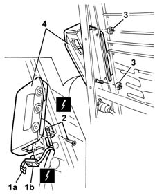
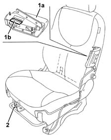

5580C44 front side bag module one lh or rh r r
- Path
- Procedures > 55 ELECTRICAL EQUIPMENT > 5580 SPECIAL ACCESSORIES > 5580C AIR BAG SYSTEM > 5580C44 front side bag module one lh or rh r r
- Kind
- repair procedure (removal / refitting; the operation number is the code)
- Applies to
- all engines; all production periods
- Interactive page
- https://sloeber94.github.io/elrnDB-fMltpl/en/#/2891976
Applies to: all engines; all production periods
Applies to: all engines; all production periods; only with equipment: ESP
 Removing
Removing
 Refitting
Refitting7045A10 l/h or r/h front seat (one) - r+r
7045B10 l/h or r/h front seat head restraint - r+r
7045A42 l/h or r/h front seat guard (one) - r+r (right and left)
7045A14 Front seat CUSHION ASSEMBLY (one), left or right - R.R.
1. Release the safety retainer (1a) then disconnect the electrical connection (1b).
 | Name | Connector |
|---|---|---|
1b | Driver's Side Bag |
| Name | Connector |
|---|---|---|
1b | Passenger Side Bag |
2. Disconnect the earth lead from the frame.
| Name | Connector |
|---|---|---|
2 | Earth on seat for driver's side Air Bag |
| Name | Connector |
|---|---|---|
2 | Earth on seat for passenger Side Air Bag |
3. Undo the Side Bag module fixing nuts.
4. Remove the side Air Bag module.
Place the Air Bag module in the special cupboard, resting it on a free surface with the bag facing upwards.

Applies to: all engines; all production periods; only with equipment: ESP
Refitting
RemovingObserve the following precaution.
If a new module is being fitted, attach the labels as described below.
1. Detach the removable part (1b) of the adhesive label from the new module (1a). Place a copy of the label (1b) in a specific file containing the vehicle details (model, registration data, chassis number) and the serial number of the old module. This file should be kept for future checks.
2. Apply the original label (1b) to the inner part of the base of the seat where there are already similar labels for the seat, the backrest cover and the Air Bag wiring.

Applies to: all engines; all production periods; only with equipment: ESP
Place the Air Bag module back in its housing.
Tighten the nuts to the recommended torque.
 | Fastening | Component | Ø | Value (daNm) |
|---|---|---|---|---|
- | Nut | FRONT SIDE AIR BAG MODULE ASSEMBLY. | - | 0.85 |
Reconnect the earth lead to the frame.
Reconnect the electrical connection and engage the safety retainer.
7045A14 Front seat CUSHION ASSEMBLY (one), left or right - R.R.
7045A42 l/h or r/h front seat guard (one) - r+r (right and left)
7045B10 l/h or r/h front seat head restraint - r+r
7045A10 l/h or r/h front seat (one) - r+r
Check the operation of the system using the Examiner or another tester.
Topics linked from this page (9)
- 5580C AIR BAG SYSTEM
- 7045A10 l/h or r/h front seat (one) - r+r
- 7045A14 Front seat CUSHION ASSEMBLY (one), left or right - R.R.
- 7045A42 l/h or r/h front seat guard (one) - r+r
- 7045B10 l/h or r/h front seat head restraint - r+r
- C51 Earth on seat for driver's side Air Bag
- C52 Earth on seat for passenger Side Air Bag
- Q30 Driver's Side Bag
- Q31 Passenger Side Bag